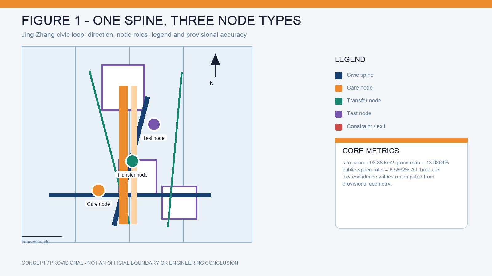
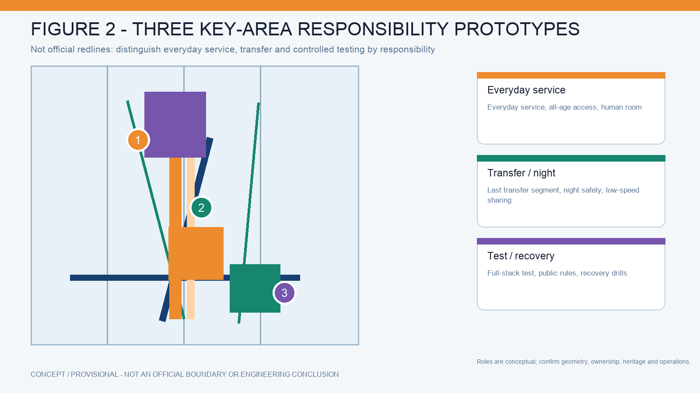
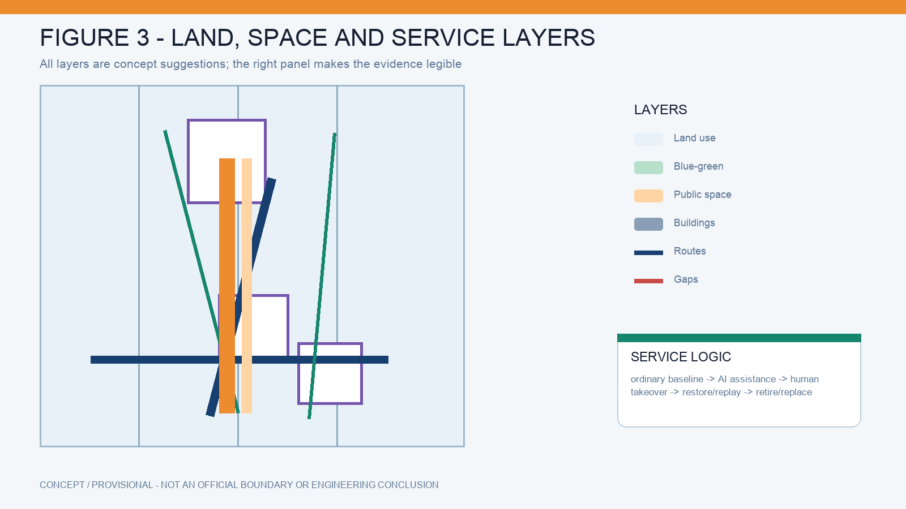
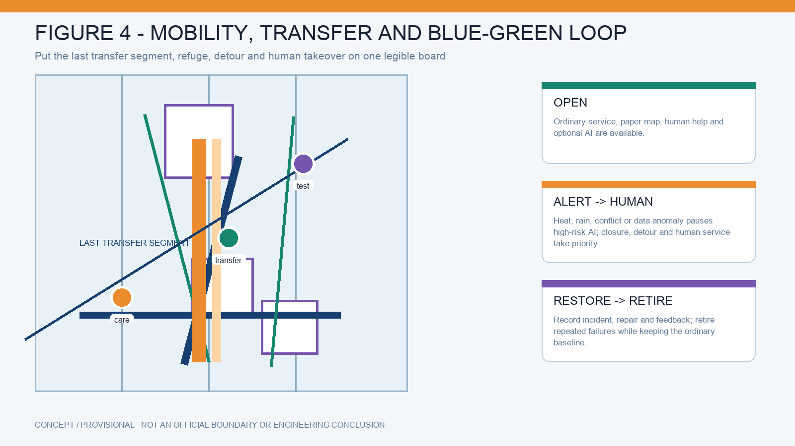
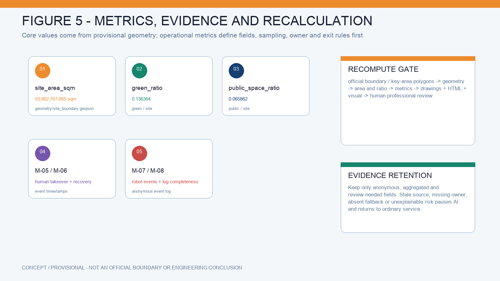

The site boundary and three key areas are rough provisional polygons. The approximately 93.88 km² display value is a design-model value, not the official 43.6 km² boundary, a redline or a precise area. Recompute all layers, metrics, drawings and pages when official data is published.
Evidence: DATA-SRC-OFFICIAL-ANNOUNCEMENT-20260509 · DATA-SRC-PROVISIONAL-BOUNDARIES-20260605 · A-PROVISIONAL-GEOMETRY
Evidence figures





One spine · three node types
civic spinecaretransfertest
Operating states
OPENOrdinary and AI-assisted service is available.
ALERTHeat, rain, congestion or equipment risk triggers guidance.
HUMANHigh-risk automation pauses; staff and paper service resume.
RESTOREIncidents, repairs, feedback and reopening are recorded.
RETIRERepeatedly risky AI is removed; the ordinary baseline remains.
Ten scenario cards
Heat refugeShade, water, rest and safe routes.
Storm detourClosure signs, rain nodes and alternatives.
Non-digital accessWalk and ask for help without a QR code.
Accessible routesFind breaks and provide human connection.
Night transferLighting, public room and staff service.
Robot sharingLow speed, yield, pause and withdrawal.
Failure replayPublish incident, repair and recovery.
Three concept prototypes
AI Origin CommunityEveryday service and all-age access.
DazhongsiTransfer and night-time public interface.
ZhongzhiyuanControlled testing and recovery drills.
Evidence boundary
All boundaries, areas, roads, building intensities and facility locations are provisional design references. They are not official redlines, statutory plans, engineering conclusions or operational commitments.
Evidence: ../sources.json
Assumptions: ../assumptions.json
Primary narrative: ../proposal.md
Core metrics
Design-model valuessite_area_sqm · 93,882,767.665 sqmgreen_ratio · 0.136364public_space_ratio · 0.065862
Review statusOffline structural checks passed; official boundary remains provisional.See sources.json, assumptions.json and metrics.json.
Six task entry points
agent.1 · Overall conceptThree positions · five functions · three areas/two wings · regional links · identity
agent.2 · Full-stack ecosystemSeven cases · eight mechanism elements · ecosystem-space mapping
agent.3 · AI scenariosTen scenes · three validations · five personas · Xiaoyuehe wing
agent.4 · Public spaceEast-west stitching · north-south continuity · three landmarks · component library
agent.5 · CultureJing-Zhang · Zhongguancun · AI new culture · bilingual signage
agent.6 · Long-term operationAnnual events · developer community · scenario opening · international conversion